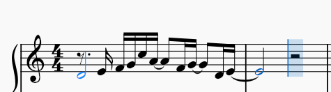

Introducción · 2 compases · 4/4
A solas con Dios
Practica la intro como se toca de verdad: por frases, con ritmo, en bucle y a tu velocidad. Primero escucha, luego toca con el modo espera y al final súbele al tempo.
- 1 Escucha la frase
- 2 Tócala en modo espera
- 3 3 rondas limpias
- 4 Une todo y sube el tempo
Partitura de referencia
Mano derecha
Elige qué practicar
0 / 4 dominadas
Rondas limpias:
Piano
Teclado del computador: A=Do4 · S=Re4 · D=Mi4 · F=Fa4 · G=Sol4 · H=La4 · J=Si4 · K=Do5 · L=Re5
Claves para que suene bonito
- Re4 es una voz aparte. Púlsalo y déjalo sonando 2 pulsos mientras la melodía entra encima (pulgar quieto).
- Las ligaduras no se repiten. La4, Sol4 y Mi4 aparecen dos veces en la partitura pero se tocan una sola vez y se sostienen.
- Las semicorcheas van parejas. Mi–Fa–Sol–Do es una subida en escalera: cuenta «1-e-y-a» con el metrónomo.
- Respira al final. Después de Mi4 hay dos pulsos de silencio; no los recortes.
- Digitación sugerida: Re 1 · Mi 2 · Fa 3 · Sol 4 · Do 5 · La 4 · Fa 2 · Sol 3 · Re 1 · Mi 2.